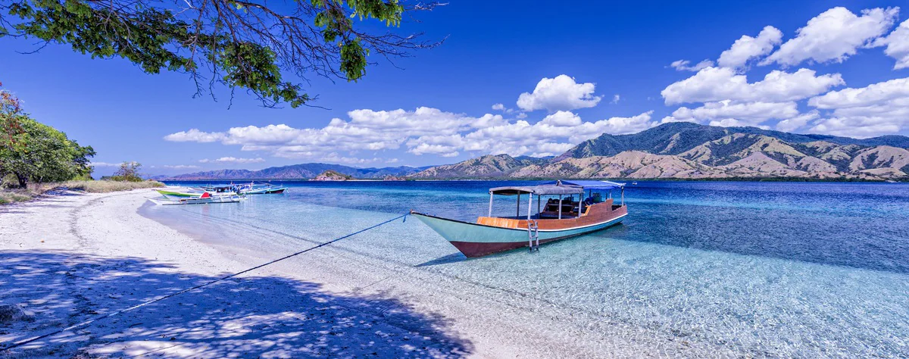
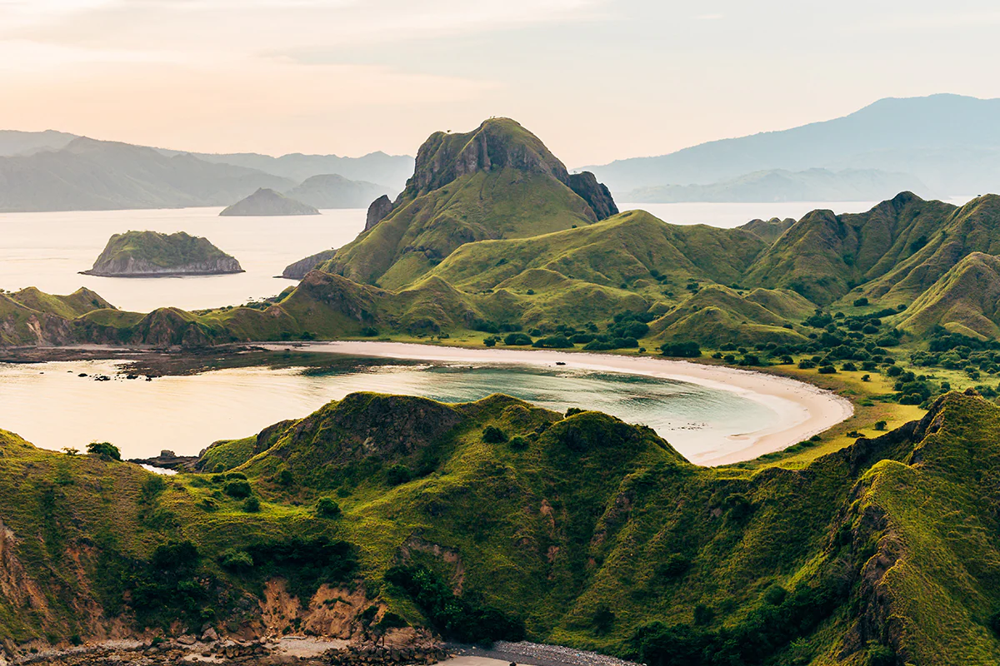
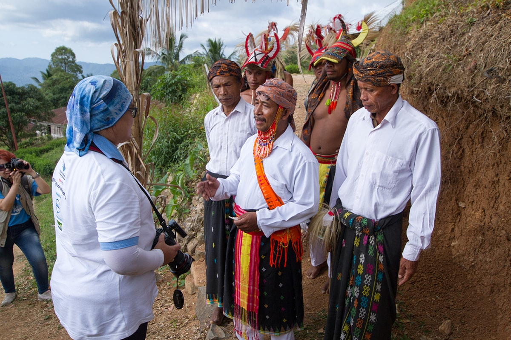

Labuan Bajo
A Perfect Getaway for Adventurers
On the westernmost tip of the Island of Flores sits the town of Labuan Bajo. It lies peacefully, with many wonders waiting for you to explore. Labuan Bajo was only a small fishing site, but flourished to become the gateway to many exotic destinations in East Nusa Tenggara.

The Port to Paradise
The extraordinary interest among travelers lies in Komodo Dragons or locally called ora. It is
a valuable alluring factor, showcased in its superb national park.
The Komodo National Park was listed as UNESCO’s World Heritage Site in 1991. Both on land and
underwater, it is home to fascinating wildlife. The park consists of Komodo Island, Rinca Island,
Padar Island, and numerous smaller islands around.
Labuan Bajo is known as the city of sunset. You can find plenty of out-of-this-world scenic views
of the spectacular sky.

There are some interesting destinations that you can discover inside the city. The Mirror Cave is
located only 4 kilometers away from Labuan Bajo. It is said that Dutch archaeologist, Theodor
Verhoeven,, who believed Labuan Bajo was once located underwater, founded this cave in 1951.
The local name for the cave is Goa Batu Cermin. You can see the reflective stones shine at you
in some parts, hence, the name “Goa Batu Cermin.” It translates to “stone mirror cave.”
Have you ever swam in a cave-lake before? Here’s a chance to try it in Rangko Cave. Nestled
in Ranko Village, this natural wonder presents its blue water and sunlight shining directly
towards its cave lake. Their stalagmites will surely amaze you as well.
You can also explore the paths to Cunca Rami and Cunca Wulang canyon waterfall!
Bukit Cinta, Puncak Amelia, and Puncak Silvia are all vantage points, not far away from
Komodo Airport in Labuan Bajo. You can enjoy some spectacular views of the island and
the open sea at sunset.

You can head to Kampung Ujung and experience the delicious local food center in Labuan
Bajo for the culinary feast.
Feel the romance with its stunning landscapes. Wooden cottages with thatched roofs are
camouflaged by shrubberies and towering trees up in the sloping township. They overlook
an idyllic harbor, creating perfect elements of an unforgettable experience.
Labuan Bajo can be that ideal getaway with choices of land and sea to explore for some
adventurers. Try the liveaboard experience, where you get to live onboard the spectacular
phinisi boats for several days, visit gorgeous islands and dive into the stunning wonders
of the sea.
One of the most famous islands to visit during your liveaboard trip is Padar Island.
With its outstanding panorama, Padar Island is swiftly becoming a new favorite place
for travelers. It showcases rolling hills and rugged volcanic mountains. With its
grassland and trees covering its terrace, Padar Island boasts its striking savanna hill.
The City of Sunset
There are three majorities of ethnic groups, namely the Manggarai, Bima, and Bugis.
People coming from other parts of Flores, like Ende, Ngada, Maumere, live side by
side with them. You can meet some of the locals in their beautiful village of Labuan Bajo.
Welcoming ceremonies and traditional dances will greet you warmly upon your visit to Melo Village.
Located in West Manggarai, it is located around 40 km from the heart of Labuan Bajo. Don’t
forget to stop by and get to know them!
If you are looking for places to stay, stroll along the Wae Cicu beach, where lines of hotels
and resorts are available, overlooking the best view.
You can also find amazing accommodation on nearby islands, like on Bidadari or Seraya.
Get There
Labuan Bajo is accessible by air, land, and sea. It’s a favorable location as an entry port to Komodo National Park. These are three ways you can reach this paradise:
By Air
You can reach Labuan Bajo from Komodo Airport. For direct flights, Transnusa Airlines is your best option. It connects to several major cities, including Denpasar, Kupang, Ende, and Mataram. With connecting flights, Labuan Bajo is also connected with Kalabahi in Alor. It also connects Bajawa, Sikka, Manggarai, and Larantuka via Ende, Kupang, Maumere, Ruteng, and Tambolaka. Please go to its website for more detailed flight schedules.
Overland
An overland trip across the Island of Flores is possible but costly. It connects Labuan
Bajo in the westernmost area to its eastern part.
A bus from Denpasar, Bali will take you to a long overland adventure on the bus to Bima,
Sumbawa. In Bima, you will resume Sape. There you can take a ferry to Labuan Bajo.
By Sea
A convenient option is joining liveaboards, serving Komodo and Flores. It benefits the
traveler’s timing and best spots, depending on the tour package.
There are several schedules for a ship to depart to Labuan Bajo. Tilongkabila ship from
PELNI cruises from Makassar in South Sulawesi to Labuan Bajo. The Leuser ship departs
from Tanjung Perak, Surabaya in East Java. From Benoa seaport in Bali, you can also
take the Leuser to get to Labuan Bajo.
Wilis ship departs from Makassar, and takes you from Larantuka in East Flores to Labuan Bajo.
Please refer to the PELNI website for detailed information and updates.
Get Around
There are different options for you to get around Labuan Bajo. They are: ojek (motor taxis),
travel agency cars, buses, and bemos (rented local vans with a guide-driver).
Make sure you check from official sources to rent cars or local guides. You can also find
information from your hotel about the best way to get around.